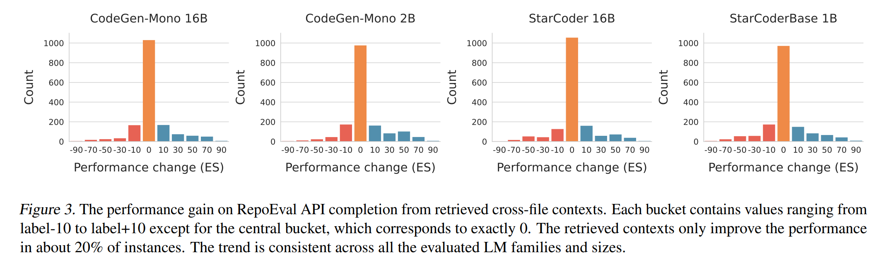
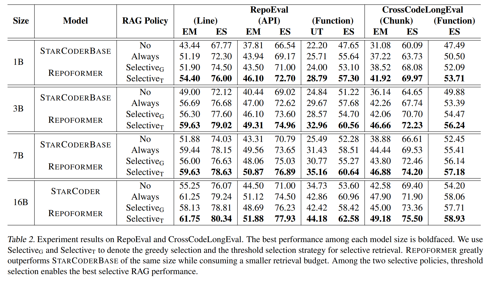

We introduce a framework for completing the code in your repository more accurately while bringing near 100% speedup compared to previous RAG-based methods. The framework is powered by Repoformer, a fine-tuned code LM capable of self-evaluating whether repository-level retrieval is required, selectively trigger retrieval, and robustly leverage the retrieved contexts. Our Repoformer-3B performs on par compared to state-of-the-art repository-level code completion system with StarCoder (16B).
Key features:
Recent work has revealed successful stories of retrieval-augmented generation (RAG) for repository-level code completion. In this work, we rethink a crucial assumption:
We ask this question based on two observations.
First, the performance improvement from retrieval is often sparse. Take API completion from RepoEval as an example, for various code LMs, only 20% of the retrieval actually improve their performance.
Second, always retrieving introduces notable inefficiencies. The size of retrieval index grows linearly with the number of lines in the repository. For moderately sized repositories, sparse retrieval is already as time consuming as completion with a 3B LM.
Our framework is centered on the selective RAG idea: the system decides whether the LM’s generation could benefit from retrieved contexts and abstains from retrieval augmentation when unnecessary (Figure 1 (a)). We further consider the self-selective RAG setting, where the LM self-decides when to retrieve, operationalized as an extension to fill-in-the-middle language modeling.
We highlight the advantages of this formulation:
Training data creation. We leverage large-scale permissively licensed repositories from the Stack and create the fine-tuning data via a three-step procedure:
Note that this label essentially encapsulates two factors for abstention: (1) the LM already knowing the answer without retrieval and (2) the code completion question not depending on cross-file information to answer and thus retrieval is likely uninformative.
Training objective. We jointly fine-tune the model for self-assessment and code completion.
Following this recipe, we fine-tune StarCoderBase on Python and multilingual repositories from the Stack to obtain the Repoformer-1B/3B/7B models.
Repoformer achieves strong code completion performance via selective RAG. Repoformer-3B outperforms StarCoderBase-7B on most of the tasks and metrics, even outperforming the 5x larger StarCoder in terms of ES for API and chunk completion. In our paper, we also show that the performance improvement from our paradigm can generalize to multiple languages and retrievers.
Repoformer greatly improves inference efficiency. For the first time, we rigorously consider the latency of repository-level code completion of the entire RAG pipeline. In the self-selective RAG setting, we find Repoformer saves the inference latency by up to 70% without sacrificing the accuracy.
More importantly, we show that Repoformer serves well as a plug-and-play selective RAG policy for RAG pipelines instantiated with other larger code LMs as the generation model. For these models, we similarly observe that selective RAG improves the accuracy while reducing the inference latency.
Repoformer makes accurate abstention decisions. As shown below, we find over 85% of the abstention decisions are accurate, that the model's performance cannot be improved via retrieval.
Repoformer is more robust to retrieval. Compared to the StarCoderBase model before fine-tuning, we find Repoformer exhibiting strong ability to leverage the retrieved contexts.
Repoformer is robust to threshold selections. In practice, a retrieval threshold is required to make the retrieval decisions. In the paper, we use the same threshold setting and find that Repoformer provides decent accuracy-latency trade-offs at a wide range of thresholds.
We provide further analyses on generalization, latency, as well as ablations of the training designs. For the details, please refer to our paper.
@article{Repoformer,
title={Repoformer: Selective Retrieval for Repository-level Code Completion},
author={Di Wu, Wasi Uddin Ahmad, Dejiao Zhang, Murali Krishna Ramanathan, Xiaofei Ma},
url={https://arxiv.org/abs/},
year={2024},
}